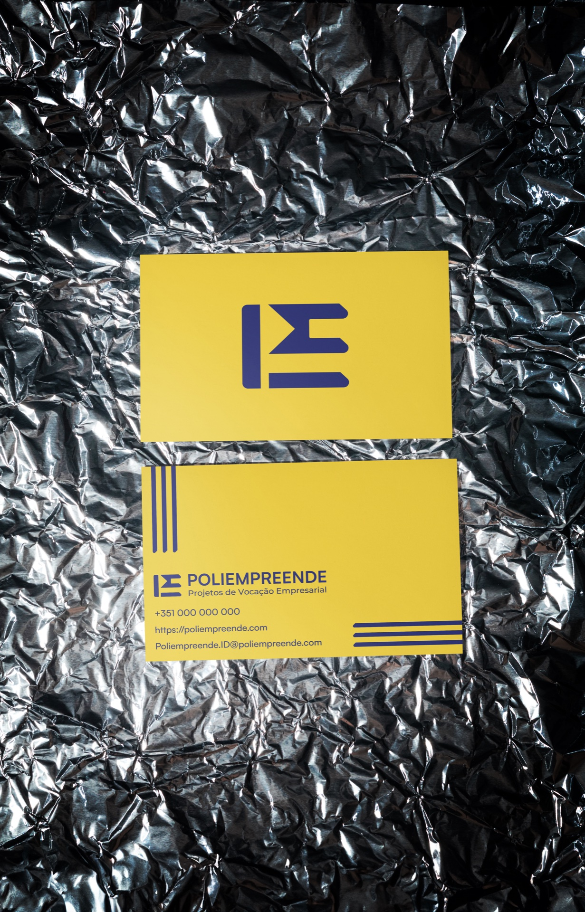
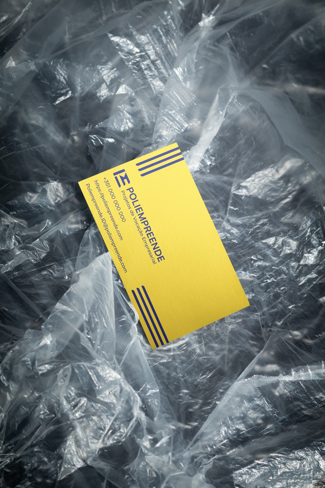
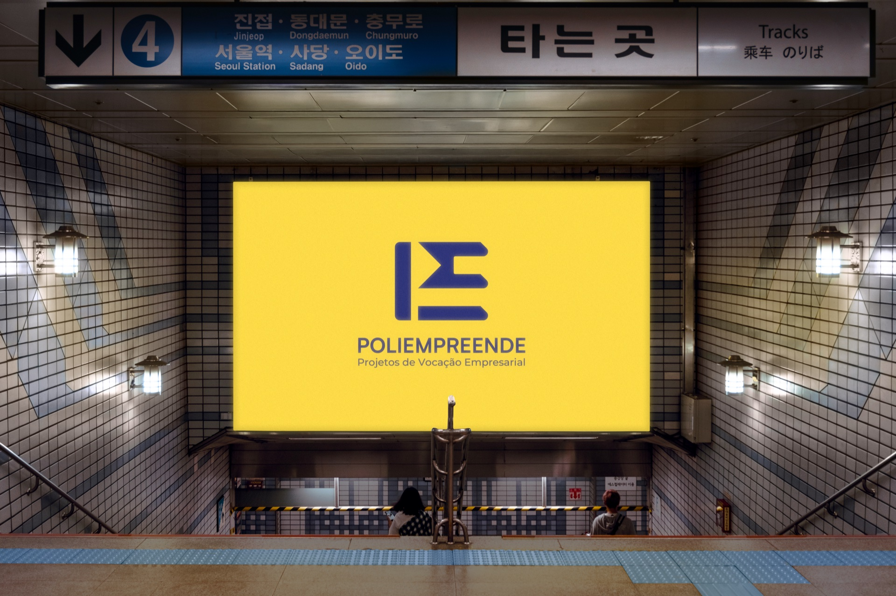
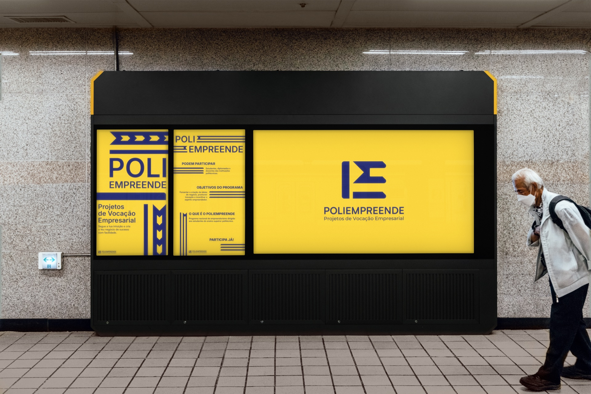
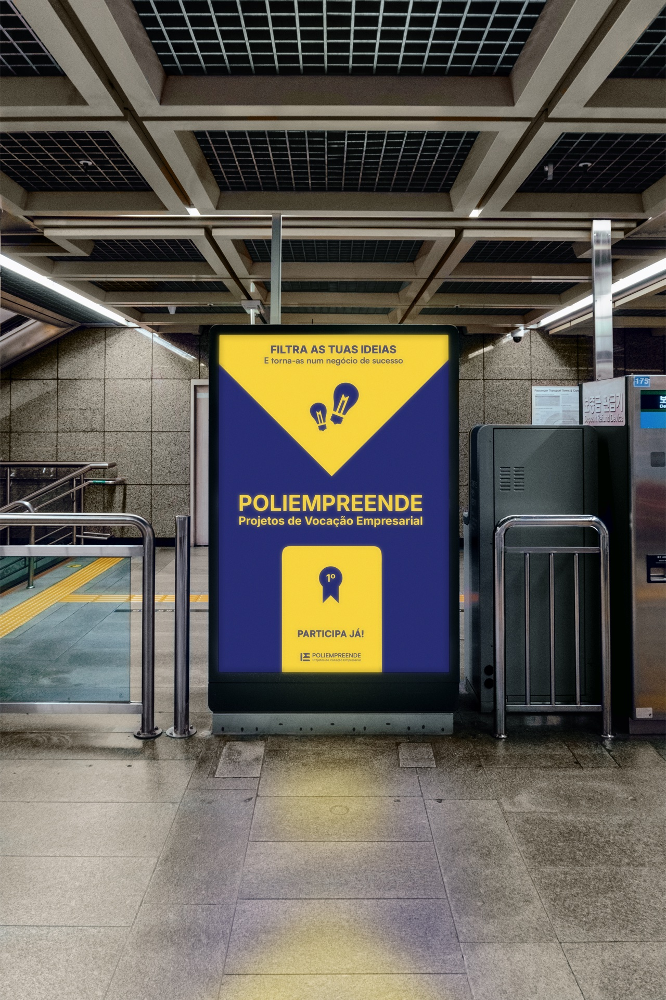
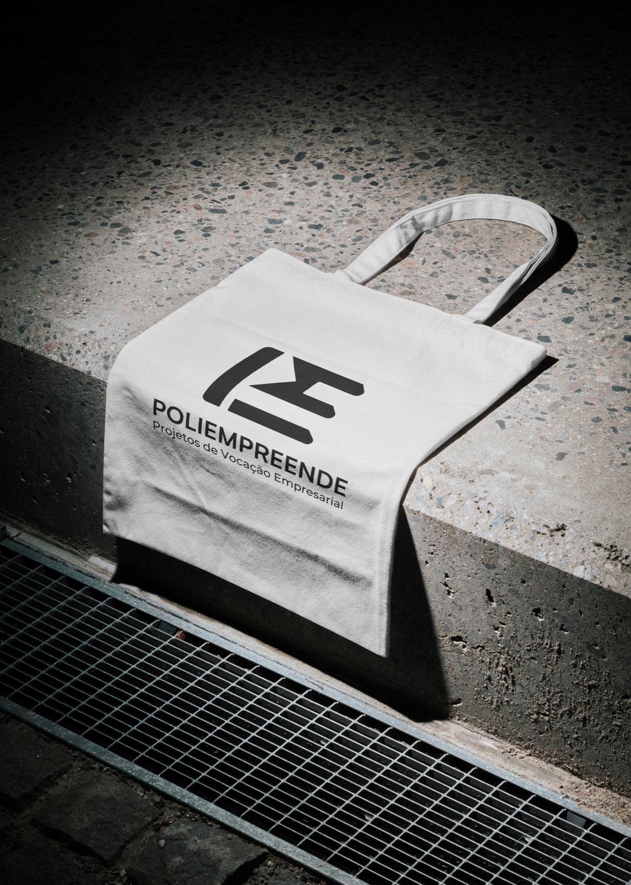
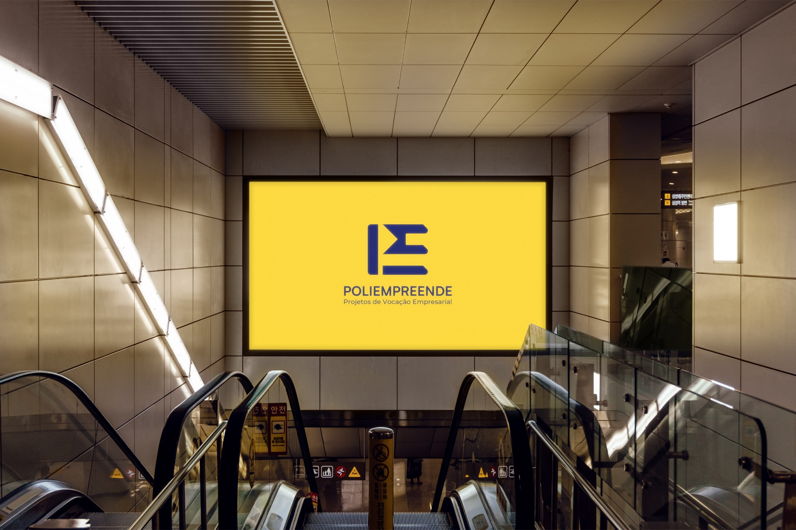
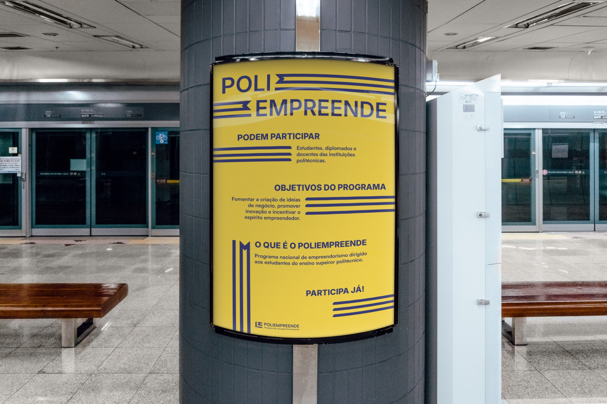
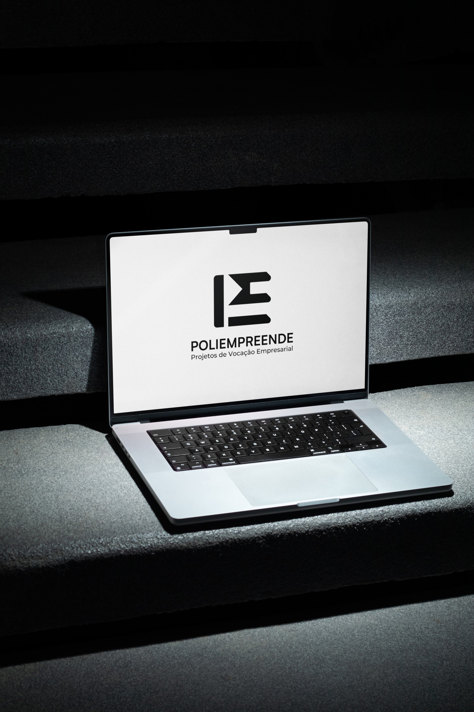

01
Poliempreende
The largest entrepreneurship network in Portuguese polytechnic higher education.
Context
Poliempreende is a national entrepreneurship network connected to polytechnic higher-education institutions across Portugal.
Objective
The competition called for a redesign of the visual identity, with the goal of modernising the brand and reinforcing its relevance among students, young entrepreneurs and investors.
Final Proposal
The final proposal modernises the visual identity to convey dynamism and the capacity to adapt.








